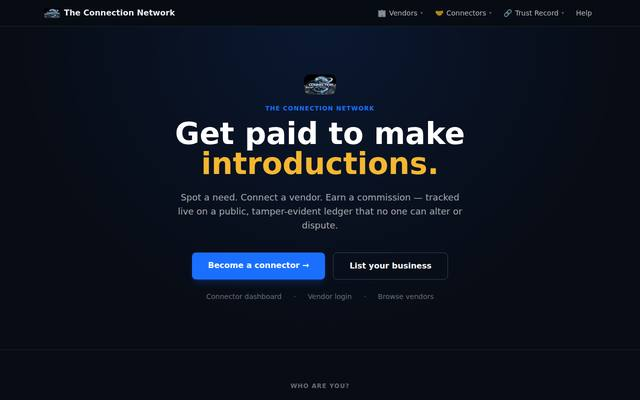

Live · Active Development
TCN — The Connection Network
Connection infrastructure for the real world.
A technology platform evolving from an early "People's Company" concept into a structured, trust-verified referral network — vendors, connectors and a hash-chained public ledger that makes every commission, introduction and payout provable instead of asserted.
Visit Live Project →